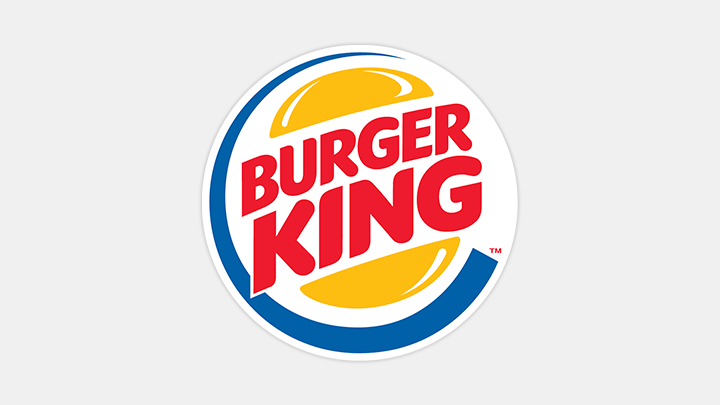

McDonald's Corporation é a maior cadeia mundial de restaurantes de fast food de
hambúrguer,
servindo cerca de 68 milhões de clientes por dia em 119 países através de 37 mil pontos de
venda.

Burger King, muitas vezes abreviado como BK, é uma rede de restaurantes
especializada em fast-food, fundada nos Estados Unidos por James McLamore e David Edgerton, que
abriram a primeira unidade em Miami, Flórida.